众所周知，由于GFW的存在，Google，YouTube等一系列网站被挡在了墙外，这样一来很多优质资源都无法访问。作为一名程序猿，平时工作需要查阅不少资料，用百度很不方便。之前也用过第三方的VPN和免费蓝灯，但是总感觉不安全，而且不是很稳定。而自己除了本职工作之外，平时也喜欢研究一些相关技术，所以就萌生了自己搭建VPN的想法。经过一段时间的折腾，VPN是搭好了，结果发现完全连不上，后来了解到使用PPTP协议的VPN早都被封了。之后经过研究，发现Shadowsocks代理很方便，自己也成功的搭建了服务。这里总结下自己搭建的过程，以供以后参阅：
先来分析一波原理，没有耐心看的可以直接跳转到搭建过程~~
关于GFW
GFW(Great Firewall of China)是一套建立在我国骨干网国际出口上的网络内容检测和过滤系统，国内所有的运营商的流量最后全部都要接入GFW的机房之后才能够出国。这套系统功能就是过滤不和谐的内容,实现的方法主要是IP封锁，DNS劫持和污染，关键字检测等手段。

IP封锁：
IP封锁是指防火墙维护一张IP黑名单，会将一些不想让你访问的网站的IP收入其中，一旦发现发往黑名单中地址的请求数据包，就直接将其丢弃，这将导致源主机得不到目标主机的及时响应而引发超时，从而达到屏蔽对目标主机的访问的目的。
DNS劫持和污染：
DNS劫持又称域名劫持，是指在劫持的网络范围内拦截域名解析的请求，分析请求的域名，把审查范围以外的请求放行，否则返回假的IP地址或者什么都不做使请求失去响应，其效果就是对特定的网络不能反应或访问的是假网址。
域名服务器缓存污染（DNS cache pollution），又称域名服务器缓存投毒（DNS cache poisoning），是指一些刻意制造或无意中制造出来的域名服务器封包，把域名指往不正确的IP地址。一般来说，在互联网上都有可信赖的域名服务器，但为减低网络上的流量压力，一般的域名服务器都会把从上游的域名服务器获得的解析记录暂存起来，待下次有其他机器要求解析域名时，可以立即提供服务。一旦有关域名的局域域名服务器的缓存受到污染，就会把域名内的电脑导引往错误的服务器或服务器的网址。
关键字检测
GFW一旦发现连接有敏感词，就会伪装成连接两方，向真正的对方发送 RST 数据包。由于RST标示复位、可以用来异常的关闭连接。所以收到RST数据包会导致连接关闭，从而达到阻断连接的目的。
所以想要绕过GFW必须克服以上的封锁手段。
关于VPN
虚拟专用网（英语：Virtual Private Network，简称VPN），是一种常用于连接中、大型企业或团体与团体间的私人网络的通讯方法。虚拟私人网络的讯息透过公用的网络架构（例如：互联网）来传送内联网的网络讯息。它利用已加密的通道协议（Tunneling Protocol）来达到保密、发送端认证、消息准确性等私人消息安全效果。这种技术可以用不安全的网络（例如：互联网）来发送可靠、安全的消息。

上图基本说明了VPN的原理，首先客户端访问VPN服务器(前提是VPN服务器没有被墙)，然后建立加密的数据通道，通道建立之后，用户就可以通过VPN访问目标网站。不过VPN的流量特征很明显，握手阶段依然是明文，导致匹配流量特征很容易。在VPN科学上网这方面，一些地区已经根据VPN的流量特征做出了相应的匹配策略，可以有效封杀VPN了，像我之前用的PPTP协议基本上已经没办法再用了。
关于Socks5
Socks5是一个代理协议，它工作在OSI七层模型的会话层，它对于上层协议(HTTP,FTP,SMTP等)是透明的，当我们打开本地代理后，本地Socks5客户端会通过事先和服务端协商好的加密协议对请求数据进行加密，这就避免了VPN握手阶段明文的问题，服务器收到请求后解密数据转发给真正的目标服务器，返回的数据也会进行加密再返回，整个通信过程均采用加密通信，至今也没有发现明显的流量特征，因此不会被GFW察觉。

关于Shadowsocks
一款基于Socks5协议实现的软件，分为服务端和客户端，需要先将服务器端部署到服务器上面，然后通过客户端连接并创建本地代理。
关于锐速
一款加速软件，原理是通过算法优化TCP的拥塞控制机制，预判并及时重传可能的丢包，从而实现加速的效果。我们搭建好了Socks代理之后会用到它，否则会有点卡。
好了，关于基础的一些理论就研究到这里，废话不多说，开始我们的搭建过程吧。
搭建过程
创建VPS
第一步，我们需要租一个位于国外的VPS，这里给大家推荐DigitalOcean,每个月最低只要5$，而且支持Paypal支付，很方便。
在首页输入账号和密码注册，验证后点击 Create Droplet创建服务器，系统会提示充值，可以使用信用卡支付，若你的信用卡不支持可以选择用Paypal支付(可以想象成支付宝)，没有Paypal账户的话直接去申请一个，绑定一张银联卡，国内大行的卡都可以。然后进行支付即可。
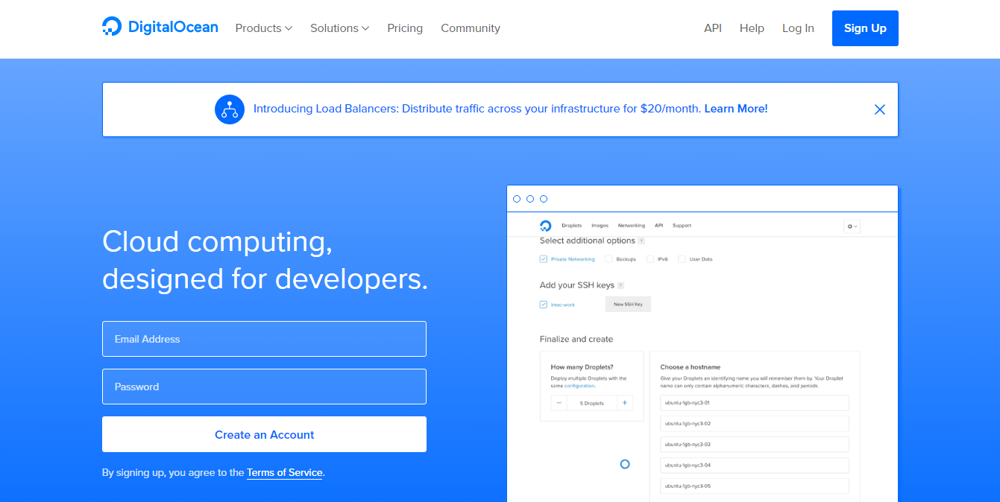
支付完成后就可以创建VPS了，点击右上角 Create Droplet，然后选择操作系统，这里我选择的是Ubuntu14.04x64的系统，不要选太高版本，后面要装的锐速不支持太高版本的内核。
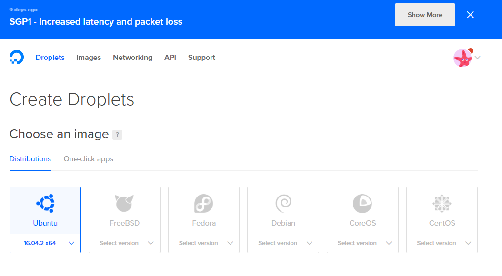
VPS配置选择，若只用于上网，选最低配置足够了。
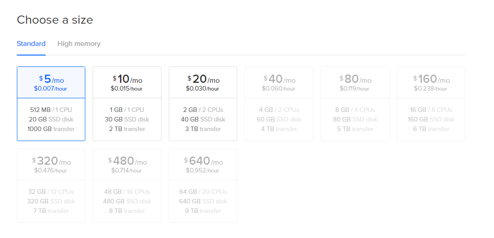
机房位置推荐San Francisco的机房，感觉速度还可以，之前试过New York的，感觉速度一般，大家可以点击这里测一下各个结点的网络状况，选择最适合自己的即可。
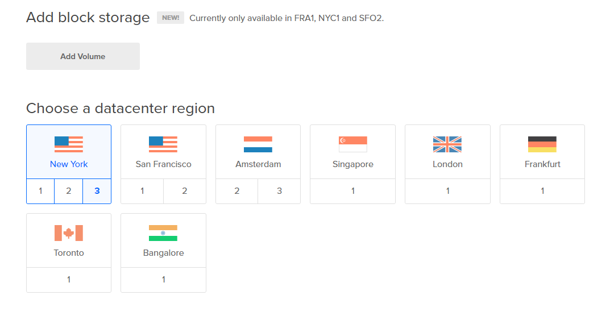
SSH Key配置，配置了之后可以使用密钥登录，这个比用密码登录的安全系数要高。密钥形式登录的原理是：利用密钥生成器制作一对密钥——一只公钥和一只私钥。将公钥添加到服务器的某个账户上，然后在客户端利用私钥即可完成认证并登录。这里先不讨论这个问题了，下文的链接有生成密钥的方法。直接点击Create即可。
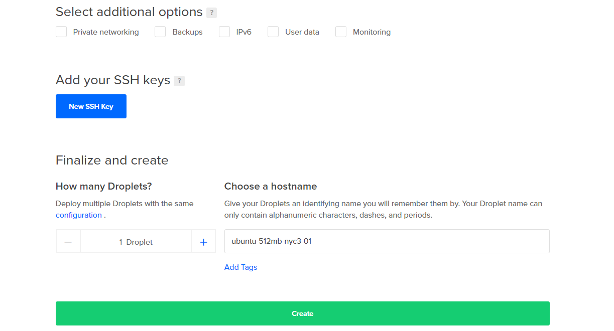
到这里后，服务器就创建好了，一定要牢记IP Address，以后登录服务器都要用到它。
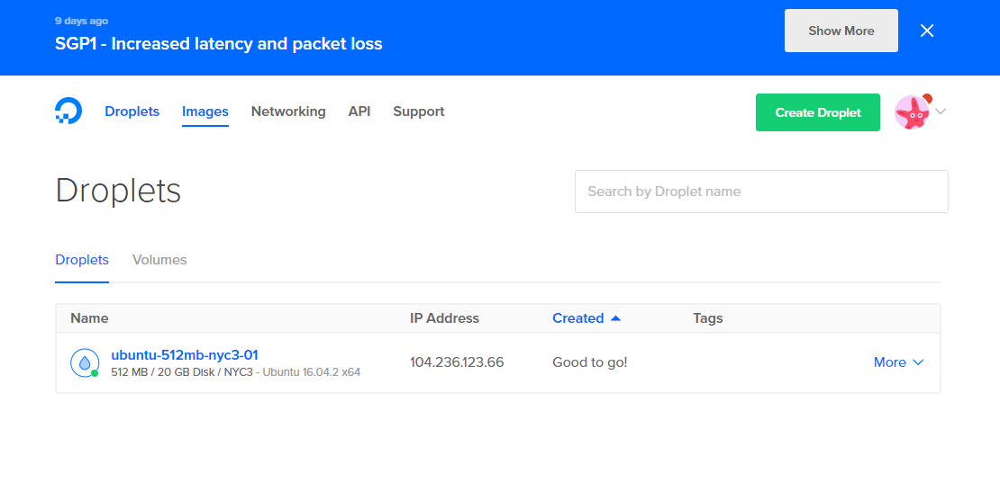
登录并初始化
现在我们已经可以登录这台服务器了。Linux下就不用说了，相信对大家来说都很简单。主要说说Windows，首先我们需要一个Shell终端，Putty、XShell等等都可以，这里我使用了Git(一款免费、开源的分布式版本控制系统)自带的Shell终端，这里不管你使用的是哪种Shell终端，打开命令行后，输入以下命令：
|
|
your_ip换成要换成刚才创建的服务器的IP地址。登录成功后会看到如下界面：
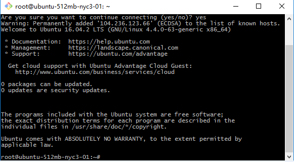
然后执行
更新软件包列表：
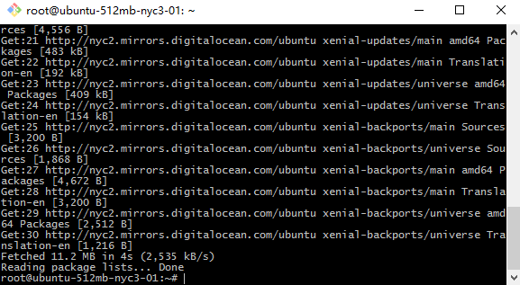
官方推荐这篇教程来提高服务器的安全性，大家有空可以看一下。
配置Socks5代理
执行以下命令：
至此，shadowsocks服务端已经成功安装，然后执行以下命令编辑配置文件：
文件内容如下：
将your_server_ip替换为你的服务器IP，choose_your_password替换为自己想要设置的密码(这个密码将用来验证连接者的身份)，然后保存退出。
执行以下命令启动服务：
想要停止服务则执行以下命令：
至此，socks5代理服务已经配置成功。接下来配置本地代理。
本地代理配置
点击这里下载Shadowsocks客户端，这里只说下windows下的配置方法，下载完之后运行，配置如下：
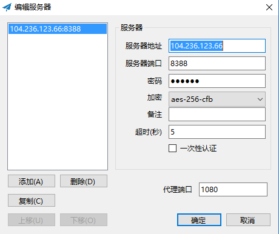
输入服务器的IP地址，还有和服务器端约定好的端口和密码，保持加密方式一致，点击确定，右键右下角图标开启系统代理，现在我们已经可以访问Google、Facebook、Twitter等网站了。手机端可以去Google Play下载影梭，配置方法同上。
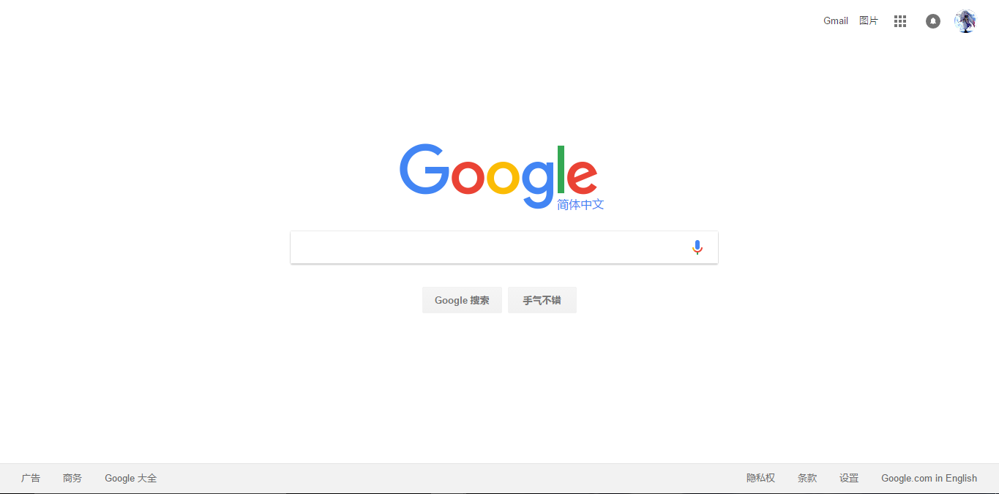
如果只是看看网页查查资料的话现在已经足够了，不过若是想上Youtube看高清视频仅仅这样还是不够的，接下来说下锐速的配置过程。
锐速加速
首先得确定我们的VPS究竟是采用了哪种虚拟化技术，openvz 还是 kvm 还是 xen 或者是 vmare，如果是openvz，那么很遗憾，锐速不支持openvz。具体查看方法之前试了好几种，感觉这种方法比较靠谱，执行：
查看网卡信息，openvz的一般都是venet0: ，xen、kvm的一般都是eth。
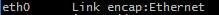
然后查看系统内核信息，这个在我们每次登录服务器的欢迎界面就可以看到：
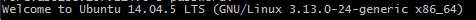
因为锐速对于某些版本的内核是不支持的，可以在这里查看自己的系统内核是否支持。
如果不支持的话就要更换系统内核了，更换系统内核的方法可以参考这篇教程，这里不再赘述。
假设现在你的系统内核已经可以支持锐速，那么执行以下命令：
如果内核完全匹配就会自动下载安装。
接下来执行以下命令重启锐速：
配置完成。打开YouTube，随便点开一个视频：
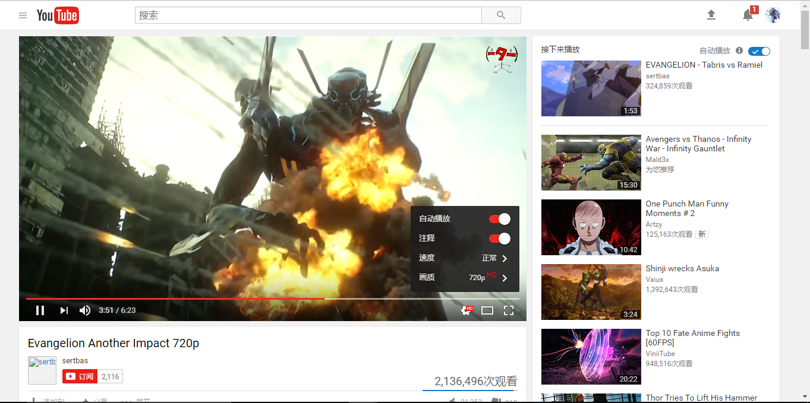
720P,无压力。
至此，全部配置过程完成。第一次正式写博客，居然写了这么长…
参考链接
虚拟专用网
防火长城
建立自己的VPN服务器
锐速破解版linux一键自动安装包
Ubuntu 14.04 更换内核以安装锐速
增强VPS安全